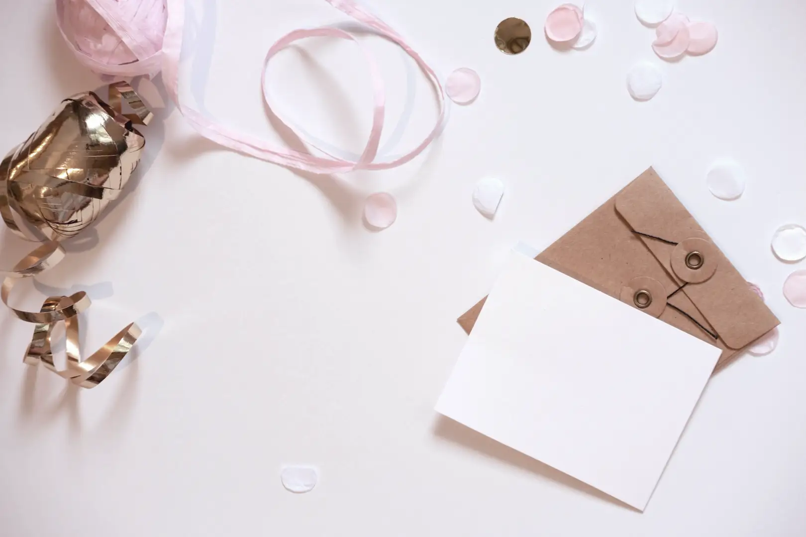
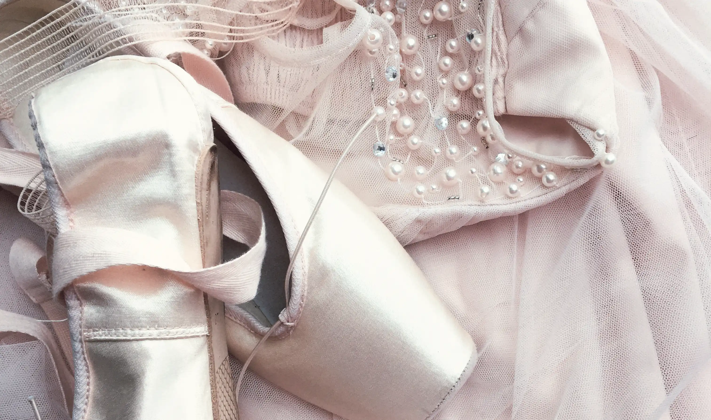
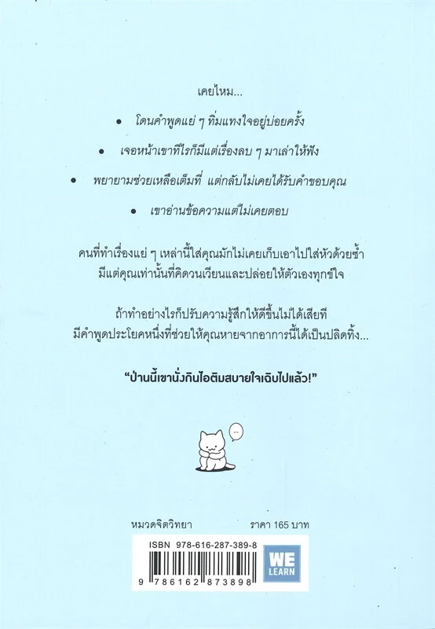
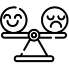
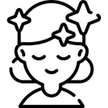
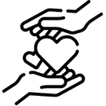
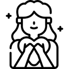

ถ้าเรื่องของคนอื่น

多分そいつ、今ごろパフェとか食ってるよ。

เคยไหม? แค่คำพูดของใครบางคนก็ทำให้เราคิดมากไปทั้งวัน
หรือเรื่องเล็ก ๆ ที่คนอื่นอาจลืมไปแล้วกลับกลายเป็นเรื่องที่เราเก็บมาคิดไม่หยุด!
หนังสือ
“ป่านนี้เขานั่งกินไอติมสบายใจเฉิบไปแล้ว!”
จะชวนให้เราลองเปลี่ยนมุมมอง ปล่อยวางเรื่องที่ควบคุมไม่ได้
หนังสือเล่มนี้ไม่ได้ชวนให้เราไปเปลี่ยนแปลงคนอื่น
แต่ช่วยปรับวิธีคิดและความรู้สึกของตัวเองแทน
เพราะเราไม่สามารถควบคุมการกระทำของทุกคนได้
ทำให้เหมาะกับการอ่านเพื่อปรับทัศนคติให้มีพลังบวกมากขึ้น
เนื้อหาจะชวนให้เราหยุดคิดวนกับเรื่องเหล่านั้น
และมองเห็นว่า ความรู้สึกของเราก็สำคัญไม่แพ้ใคร
ไม่ต้องเก็บทุกคำพูดมาทำร้าย ความรู้สึกตัวเองจนหมดพลังใจ

รับมือกับคนที่ทำให้หงุดหงิด โดยไม่ปล่อยให้เขามาทำลายอารมณ์ของเรา

เลือกเก็บแค่คำพูดที่ฮีลใจ ละทิ้งเรื่องที่ทำให้รู้สึกแย่

ช่วยด้วยใจ ไม่ต้องรอให้ทุกคนตอบแทนกลับมา

กลับมามีความสุขกับชีวิตตัวเอง ไม่ต้องใช้ชีวิตเพื่อใคร